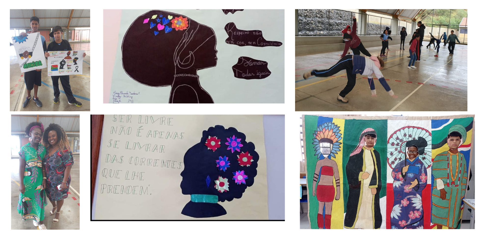

Durante todo o ano, foram promovidas diversas atividades voltadas à valorização da cultura afro-brasileira, como desfiles de Moda Afro, Oficinas de Capoeira e Exposições de Cartazes, entre outras. No Colégio Estadual Professor William Madi - Ensino Integral, os alunos são incentivados a desenvolver trabalhos relacionados a diferentes temas ao longo do ano letivo. Essas atividades não apenas enriquecem o conhecimento histórico e cultural dos estudantes, mas também promovem reflexões sobre a importância da representatividade, da equidade racial e do combate ao racismo. Integrando o currículo de forma interdisciplinar, essas ações fortalecem o protagonismo juvenil e o respeito à diversidade, culminando em eventos que celebram a identidade afrodescendente e contribuem para a construção de uma sociedade mais inclusiva e justa.
